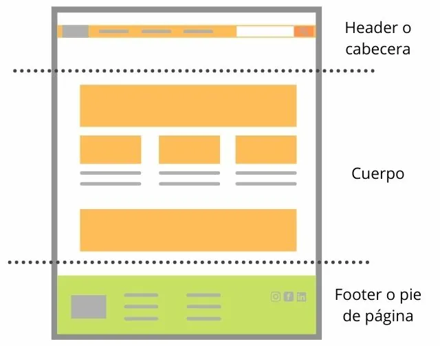

Introducción al desarrollo web
Se conoce como desarrollo web al proceso de crear y mantener un sitio web que sea funcional en internet, a través de diferentes lenguajes de programación, según el modelo y la parte de la página que corresponda. Cada sitio tiene una URL única que lo distingue de los demás en la red informática mundial.

Un sitio web puede clasificarse de diferentes formas. Para cuestiones de desarrollo web principalmente se divide en dos partes.
- Front end: Es la parte que interactúa con el usuario, tanto en imagen como en función. Por ello está íntimamente relacionada con la experiencia del usuario y la interfaz de usuario.
- Back end: Se refiere a la parte que está en contacto directo con el servidor; es donde se aplica el código de programación para crear la estructura. Permanece en un segundo plano a cargo de la accesibilidad, actualización, bases de datos y cambios del sitio.
Características
Estas son algunas de las características del desarollo web:
- Necesitan de un único desarollo para que este pueda funcionar en cualquier dispositivo. Por ejemplo, un mismo desarrollo HTML5 puede funcionar en teléfonos móviles, tablets, pc, entre otros.
- No necesitan descarga. Funcionan a base de un alojamiento en un servidor y desde el acceso de un navegador para tener acceso a la aplicación. Por lo tanto, necesitas conexión a internet para poder acceder a ellas.
- Funcionan mediante cualquier navegador No requieren un navegador exclusivo.
- Son más económicas y menos complejas. Es más sencillo de desarrollar que una aplicación nativa.
Elementos
El mundo online tiene gran importancia en nuestro día a día e internet ha revolucionado la forma de comunicarse y vender de los negocios. Por ello, es de vital importancia estar presentes en este mundo y tener una página web de tu empresa puede aportarte múltiples beneficios: mejorar la visibilidad de tu negocio, aparecer en las búsquedas de Google para que te encuentren y conseguir conectar con el cliente que necesita tu producto o servicio es algo necesario para poder potenciar tu marca.
Hay millones de páginas web en el mundo digital, pero no todas ellas cumplen los requisitos mínimos que toda buena página debería tener. Por ello, en este artículo te traemos los elementos principales de una página web de éxito.
- Hosting
Empezamos con uno de los elementos esenciales de una página web, el alojamiento web o hosting. Un hosting es un servicio de alojamiento donde se almacena todos los archivos y datos que contiene tu página web. Por ejemplo, si has guardado un documento de texto en tu ordenador, este se encuentra almacenado en tu disco duro, pues lo mismo pasa con una página web, esta se encuentra alojada en un espacio que es accesible desde cualquier parte del mundo.
Este servicio de alojamiento se encuentra físicamente en una máquina llamada servidor web, mucho más potente de lo que podría ser el disco duro de tu ordenador, por lo que cuando contratas un hosting estás “alquilando” un espacio en un servidor físico que se encuentra conectado 24h al día los 365 días del año.
Hay diferentes tipos de hosting:- Hosting compartido.
- Hosting dedicado.
- VPS.
- Hosting elástico.
- Hosting en la nube.
- Dominio.
El dominio de una página web es un elemento web imprescindible, pues describe de manera concisa de que va tu web. Un dominio es un nombre único que se le asigna a un sitio web en internet. Es decir, el dominio web sería el equivalente a una dirección física. Haciendo una analogía: si el hosting es la casa, el dominio es su dirección.
¿Por qué es tan importante tener un dominio?
Sin el dominio, las personas que quisieran acceder a tu web tendrían que recordar una dirección IP de tu servidor, que es una sucesión de números que se vería de la siguiente forma:
158.265.872.4
Imagina recordar cada dirección IP de todos los sitios que quieras visitar, sería una locura. Por ello, tener un dominio facilita la búsqueda del sitio web al usuario. Este se compone de dos partes, el nombre del sitio web (twitter) y la extensión del dominio (.com).
- Plataforma.
Antes de empezar a crear una página web debes pensar en qué plataforma lo quieres hacer y cuánto tiempo puedes invertir en ella.
Una de las formas que te puedes plantear a la hora de desarrollar una página web es que te la cree un programador en código (HTML, CSS, JS, PHP…), pero para esto tienes que tener en cuenta la tarifa que te va a cobrar ese programador más la tarifa por hora cada vez que quieras hacer cambios a esa web.
Por otro lado, hay múltiples plataformas disponibles a la hora de desarrollar una página web que puedes gestionar tú mismo o encargárselas a una agencia como pueden ser:- WordPress.
- PrestaShop.
- Shopify.
- Magento.
- Plugings wordpress.
Los plugins son extensiones que amplían las funciones de la página web. Es decir, son aplicaciones que contienen determinadas características que ayudan a mejorar tu WordPress. Existen plugins para todo lo que puedas imaginar:
- Diseño.
- Seguridad.
- E-commerce.
- Analítica.
- Redes sociales.
- E-mail marketing.
- SEO.
- Velocidad de la web.
- Estructura de la web.
Para plantear la estructura de nuestra web, primero debemos diferenciar tres elementos fundamentales que contiene una web:
Header (encabezado de la página)
La cabecera es la parte superior de nuestra web y en ella se encuentra información básica de nuestro negocio/marca. En ella podemos encontrar varios elementos importantes como es el logo y nombre de la empresa, el menú de navegación principal. Además, se suele incluir datos como el buscador de la página y una llamada a la acción.
Es importante que la cabecera se quede fija para que a medida que el usuario vaya navegando por las distintas páginas de tu web se mantengan los accesos más importantes fijos.Body (cuerpo de la página)
El body o cuerpo de la web se encuentra situada en la parte central de la página (entre el header y el footer) y es donde se presenta al usuario el contenido de esa página o sección. Es una especie de contenedor donde plasmar todos esos textos, imágenes, videos, etc.
Para cada página de tu sitio es diferente, puedes tener una página principal donde el contenido sea la presentación de tus productos y servicios y tu propuesta de valor o disponer de una página con un formulario de contacto.Footer (píe de página)
El pie de página o footer lo encontramos en la parte inferior de la página y se mantiene fijo en todas las páginas de nuestra página web. Aunque muchas veces a la hora de estructurar una web no se le da importancia, este lugar es sin duda otro elemento fundamental de una página web.
La información a destacar en esta sección puede ser todos esos elementos que no se han podido resaltar en el resto de la página, así como elementos básicos de información. - Textos.
Otro de los elementos de una página web al que hay que prestar especial atención son los textos. Es fundamental que los textos inspiren confianza a los visitantes y para ello deben ser claros y con un lenguaje sencillo que pueda entender tu público objetivo.
Para ello, lo primero que debes de hacer es organizar su estructura, saber que contar en cada parte de la web y no sobrecargarlos, la simplicidad y la claridad en ellos debe ser un requisito indispensable. Además, se debe dar énfasis a lo que queremos resaltar realmente con el fin de comunicar con éxito.
Proyectar el mensaje de manera adecuada y crear textos persuasivos hará que tu visitante realice una acción. Esta acción puede ser desde lograr posibles contactos gracias a que el visitante deje su información en un formulario o una solicitud de información y presupuesto acerca de los servicios que se ofrecen en la página.
No debemos olvidarnos de que podemos obtener ventajas ante nuestros competidores optimizando de manera adecuada los textos de nuestra web. El SEO es la manera de posicionarnos entre las primeras posiciones de manera orgánica en los buscadores. Una vez que vas a trabajar los textos de tu web para que expresen de manera clara lo que quieres transmitir con tu página, sería adecuado que dedicaras una pequeña parte de ese tiempo en trabajar los contenidos para que sean de calidad y crear buenos textos optimizados para Google.
Dirigirlos a responder al usuario hará que recibas tráfico de calidad que esté interesado en tu producto y esto te permitirá ir escalando en las posiciones de búsquedas - Imágenes.
Las imágenes que debe contener una página web deben ser de calidad y complementar el mensaje que quieres transmitir con el texto. No se debe sobrecargar la web con cientos de imágenes, porque, aunque el dicho diga “una imagen vale más que mil palabras”, no debes de desviar la atención del usuario y rellenar espacio sin más, además que esto puede afectar al tiempo de carga de la página.
Dentro de que elementos componen una web, las imágenes adquieren gran importancia y deben ser seleccionadas cuidadosamente porque con ellas puedes conseguir transmitir las líneas generales de tu negocio y marca.
Para darle ese toque personalizado y atractivo a la web, lo mejor es disponer de imágenes propias del negocio, como fotos al personal, imágenes de proyectos, materiales, etc. En el caso de que no se tengan, se puede invertir una pequeña parte del presupuesto a la realización de fotos ya sea contratando a un profesional o con el mismo Smartphone que si dispone de una buena cámara podrá ayudar.
Aplicaciones
Las aplicaciones en el desarrollo web son herramientas y tecnologías que permiten a los desarrolladores crear, implementar y mantener sitios web interactivos, dinámicos y eficientes. Estas aplicaciones pueden ser desde software para codificación, hasta plataformas para gestionar contenido o herramientas que optimizan la experiencia del usuario.
Tipos de aplicaciónes en el desarrollo web
- Aplicaciones web estáticas. Son simples y ofrecen poca interactividad.
- Aplicaciones web dinámicas. Generan contenido de manera interactiva en función de las acciones del usuario o del acceso a bases de datos.
- Aplicacioes web de una sola página. Son aplicaciones que cargan una sola página HTML y luego actualizan dinámicamente el contenido en función de la interacción del usuario, sin recargar toda la página.
- Aplicaciónes web progresivas. Son aplicaciones web que funcionan como aplicaciones nativas. Pueden ser instaladas en el dispositivo, acceder a características del sistema operativo (como notificaciones push), y trabajar sin conexión.
- Aplicaciónes web híbridas. Son aplicaciones desarrolladas usando tecnologías web pero empaquetadas para que puedan funcionar en dispositivos móviles como si fueran aplicaciones nativas.
Ejemplo: Páginas web informativas o portafolios
Ejemplo: Aplicaciones como redes sociales, tiendas en línea o servicios de streaming.
Ejemplo: Gmail, Google Maps.
Ejemplo: Twitter Lite, Starbucks PWA.
Ejemplo: Instagram, Uber.